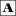

McKague Photographs (County Cavan) Master List
McKay-Z
![[floral bar]](../../../../../graphics/3bar.gif)
The letter before each name indicates the one of John and Jane's children (or in one case brother) to whose family tree the person belongs. (We still don't have the identity of one of their children.) A few people fit in more than one tree--for example, where a descendant of one McKague married a descendant of a different McKague.
Ann
George
Jane
John
Mary
Robert Enry
William
William the Homesteader (John's brother)
McKay, Beatrice Anne (McKague) (Bette, Betty, Betty Anne)
McKay, Cyril Douglas (Cy)
McKeage/McKeague, Betsey
McKee, Wilene,1915-ca1966 (Nip)
McMaster, Mary Elizabeth, 1869-1955 (Lizzie)
Melcosky, Earl
Melcosky, Kylie Raine
Melcosky, Lori Dawn (Clark)
Melcosky, Tyson Jared
Merrill, Sandra
Milne, Jessie (Daisy)
Miskin, Beth (McKague)
Miskin, Joshua Richard
Miskin, Mark Jacob (Jacob)
Miskin, Mark Richard
Mitchell, Mary Elizabeth (Massey)
Moon, Caroline (Eagleson), 1846-1925
Moon, Gladys Burgoyne (Foster), born ca 1881
Moon, Jean
Moore, Barbara (McKague)
Moore, Howard
Moore, Ivan James
Moore, Janet Kay
Moore, Michael
Moore, Minnie Luella (McKague), 1887-1969
Moore, Penny Fay
Moore, Sabrina
Moore, Samantha
Moore, Sandra (Merrill)
Moore, Thomas Everett
Moran, Andrew Réné James
Moran, Erica Sebastienne (van Will) (Sebastienne)
Moran, Sean Sebastian James
Mose, Ione Margaret
Nelson, Shelly Lynn
Nordberg, Alberta Fay (Carr)
Ogg, Marjorie Allison (Massey)
Oliver, Bryce Alexander
Oliver, Jean Isobel (McKague)
Onstad, Theresa (Tress)
Orr, Sarah, 1838-1901
Palmateer, Carol Anita
Palmateer, Clare Cleveland, 1931-1960
Palmateer, Elgie Rumsey, 1910-1954
Palmateer, Esther (Day)
Palmateer, Luella Catherine (Massey), 1909-1981
Palmateer, Melody Anne
Palmateer, Mona Delores
Palmateer, Patricia Gail
Palmateer, Paul Beverly Hayden, 1940-1971
Palmateer, Rumsey (Rum)
Pankiw, Thelma Alice (McKague Horb) (Numie)
Parnell, Fanny, born 1823
Parsons, Angela Dawn (Fast)
Parsons, James David (Jim)
Parsons, John Stephen (Jack)
Parsons, Laurie (Burton)
Parsons, Robin Doris
Parsons, Sharon Carol (Proctor)
Parsons, Shaun Stephen
Parthun, Felice Roseanne Janet
Penix, Karen Elaine (Center)
Perry, Mary Victoria (Huntington), ca 1838-1931
Peterson, Randa Rae (McKague)
Peterson, Velma Ellen Isobel
Philastre, Rhonda Anita (Cormier Roy)
Phillips, Laurie Jean (McGaw)
Powers, Charles
Powers, Mary Ann (McKague), born 1868
Prediger, Madeline Dorothy
Prince, George H., born 1862
Prince, Ruth, 1900-1989
Prince, Sara
Proctor, Arthur Sidney,1922-1971
Proctor, Caroline Gertrude,1920-1998 (Carrie, Carol)
Proctor, Clara Bell (McKague),1897-1986
Proctor, Colleen Patrice
Proctor, Derrill Elwood
Proctor, Dianne Lee
Proctor, Doris Elenor (Hushagen),1916-1965
Proctor, Dwayne
Proctor, Jessica Agnes
Proctor, John Alexander,1917-1991 (Johnnie)
Proctor, Jon Alton
Proctor, Jonathan Alexander,1886-1966 (Jack)
Proctor, Lincoln Derrill
Proctor, Lynn
Proctor, Madeline Dorothy (Prediger)
Proctor, Maxine Veronica
Proctor, Merilyn Verla Madeline
Proctor, Orpha Delphine (Hushagen Swensen),1920-1980
Proctor, Sharon Carol
Proctor, Stanley Dwayne
Proctor, Syd,1922-1971
Proctor, Ursula (Scharf Acres)
Proctor, Verla Myrtle
Quale, Orin
Quale, Thelma Fern (Scribner) (Qualie)
Redcliffe, Linda Anne (Anne)
Richards, Margaret Lillian, 1913-1985
Richmond, Brad William
Richmond, Graeme Donald Wolfe
Richmond, Paul Stanley Wolfe
Rose, Daisy (Jacques)
Rose, George, born 1888
Ross, Carol Anita (Palmateer)
Rossow, Fern Ione
Roy, Rhonda Anita (Cormier)
Runnels, Helen Julia, 1907-1984
Rusk, Bruce Arthur
Rusk, Clifford Arthur, 1914-1984 (Cliff)
Rusk, Donald Andrew (Don)
Rusk, Donald Calin
Rusk, Doris Lillian (McKague)
Rusk, James Arthur (Jim)
Rusk, John Davey
Rusk, Juliann (Turner)
Rusk, Leila Marlene
Rusk, Margaret Elizabeth
Rusk, Mark Joseph
Rusk, Ronnie Rose (Diamond)
Rusk, Sarah Doris
Samis, Abraham, 1813-1862
Samis, Fanny (Parnell), born 1823
Samis, Isabelle (maiden name unknown)
Samis, Jane (McKague)
Samis, Michael, 1784-1861
Samis, Norman William, 1855-1899
Samis, William, born 1825
Scharf, Ursula
Scribner, Thelma Fern (Qualie)
Seeley, Rosina (McKague), born 1861
Seney, Mary Ann,1839-ca 1884
Shaw, Caroline (Carrie)
Sheffield, Della (Kinder)
Sitter, Cheryl Margaret (Breuer)
Smith, Dorothy Mae
Smith, Helen (Massey/McKague)
Smith, Lena Alice
Smith, Unknown (McIndoo)
Southwood, Lavonne
Southwood, Myrtle Evelyn (McKague),1908-1989
Staples, Jane (McKague)
Staples, John Henry, 1834-1919
Starr, Violet, 1913-1989
Stephens, Cecil Wallace, 1908-1996
Stephens, Christopher David (Chris)
Stephens, David Carey (Dave)
Stephens, Debra Lynn (McGuire) (Deb)
Stephens, Donna Ruth
Stephens, Florence Myrtle (McKague)
Stephens, Glenn Robert
Stephens, Jennifer Anne
Stephens, Katherine Danielle (Katie)
Stephens, Linda Anne (Redcliffe) (Anne)
Stephens, Lisa Jane
Stephens, Matthew Glenn
Stillwell, Benjamin George
Stillwell, Emily Irene
Stillwell, James Jerome, 1886-1952 (Jim)
Stillwell, James Mark, 1927-1991 (Mark)
Stillwell, Mable May (McKague), 1903-1945
Stillwell, Murray Edmund
Stillwell, Robert John
Stizel, Sara (Prince)
Stuart, Florence Jane, 1887-1941
Stuart, Margaret Maria (Cochrane) (Maggie)
Stuart, Osie M. (McKague), born 1890
Stuart, William (Bill)
Sturm, Sherry
Sutherland, Ida Mae
Sutphin, Bobbie Jean
Swensen, Orpha Delphine (Hushagen),1920-1980
Tatman, Carmine (McKague McJunkins) (Cam)
Taylor, Fannie Jane (McKague)
Taylor, Roy S.
Thompson, Moya June
Timson, Peggy Lee (McKague)
Tosney, Winifred, 1912-1990 (Winnie)
Tower, Susan
Tuck, Benjamin Robert
Tuck, Donna Ruth Stephens
Tuck, Elizabeth Susan (Beth)
Tuck, Jeffrey Stephen (Jeff)
Tuck, Katelyn Laura Mechelle (Katie)
Tuck, Melinda (Arnold)
Tuck, Noah Jeffrey
Tuck, Robert Scott (Rob)
Tuck, Ross
Turner, Crystal Kay
Turner, Janet Kay (Moore)
Turner, Jordan Randall
Turner, Juliann
Turney, Geraldine Dorothy (Gerry)
van Will, Erica Sebastienne (Sebastienne)
van Will, Margaret Linda (Linda)
van Will, Sebastianus Jozef Egidius (Van, Gidi)
Vienneau, Marie Victoria (Vickie)
Welke, Donna Lynn (McKague)
White, Bertha Luella, 1892-1950
White, Dorothy
Wilson, Bertha Luella (White), 1892-1950
Wilson, Clara Margaret
Wilson, Harriet Ruth Grace (Grace)
Wilson, Mabel Luella Josephine, born ca 1912
Wilson, Marion Lillian Frances, born 1911
Wilson, Thomas Franklin, 1881-1954 (Frank)
Wilson, William Irwin, 1916-1965 (Billy)
Wilton, Mabel Louise (McKague)
Wolfe, Benjamin Louis (Ben)
Wolfe, Carla Anne (McKague)
Wolfe, Jennifer Anne (Jen)
Wolfe, Menya Ruth, 1964-2001
Wolfe, Morris
Wolfe-Parthun, Emma Mary Laurel
Wolfe-Parthun, Hannah Margaret Rose
Wolfe-Parthun, Noah Raymond Morris
Wood, Brenda
Woodall, Judith Doreen (McKague)
Young, Bethany Anne
Young, Clayton, 1911-1999
Young, Dorothy (White McCubbin)
Young, Ernest Gordon (Gord)
Young, Jennifer Anne (Stephens)
Young, Jordan
Young, Mabel Luella Josephine (Wilson), born ca 1912
Young, Nathaniel Donovan
Young, Simona Gwendolyn Jennika
Zinck, Faye Irene (Breuer)
[A-G] [H-McJunkins] [McKague, A.-McKague, J.] [McKague, K.-McKague, Z.] [McKay-Z]
![[link to cavan album page]](../../../../../graphics/cavan-pic.GIF) Back to McKague (County Cavan) album page
Back to McKague (County Cavan) album page
mckague.com Search our Site Our Genealogy Page Our Photographs Links Pure Gold Guestbook Credits